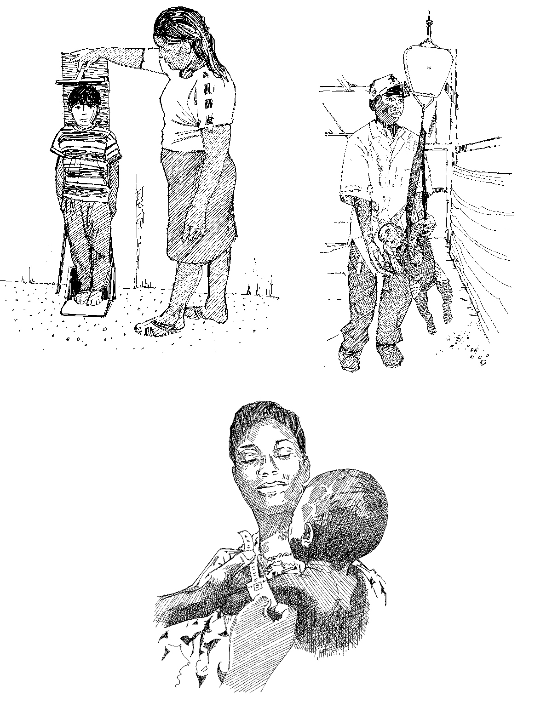

EN
|
FR
|
ES
29
OUTIL DE MESSAGE COMMUNAUTAIRE 29
Réalisation d'examens nutritionnels

Les enfants bien nourris résistent mieux aux maladies ! Il est important de faire passer des visites de contrôle à votre enfant.
Télécharger le PDF